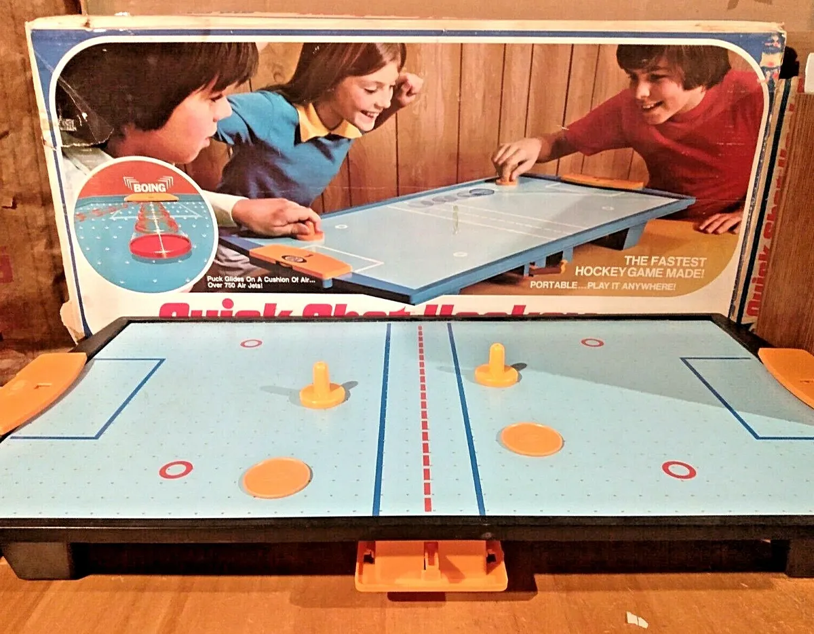
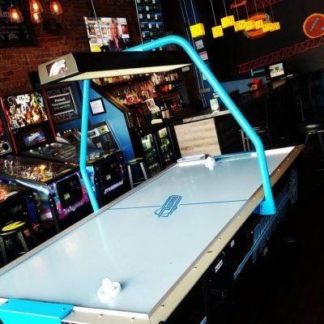
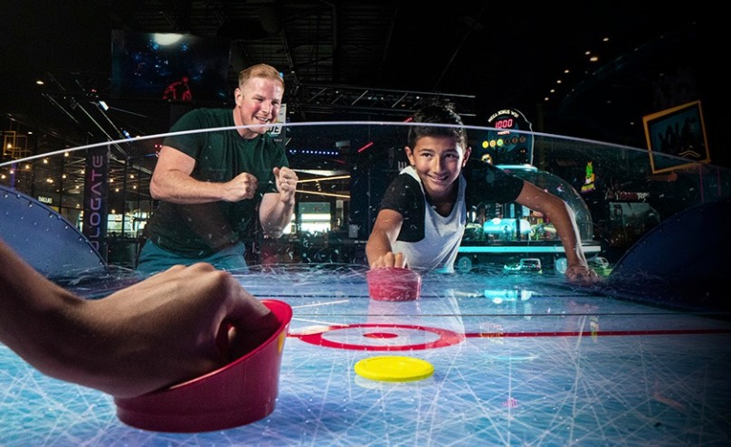

Opprinnelse
Air hockey ble oppfunnet i begynnelsen av 1970-tallet av en gruppe ingeniører fra Brunswick Billiards, inkludert Bob Lemieux, Phil Crossman, og Brad Baldwin. Målet var å skape et nytt spill som kunne konkurrere med bordtennis og biljard. Spillet brukte en jevn luftstrøm for å skape en nesten friksjonsfri overflate, som tillot pucken å gli raskt og jevnt.
Vekst og Popularitet
Spillet fikk raskt popularitet etter at det ble lansert. Turneringer ble arrangert allerede i 1973, og National Air Hockey Association (NAHA) ble grunnlagt for å organisere konkurranser. På 1980-tallet var air hockey en fast innslag på arkader rundt om i verden, og det tiltrakk seg mange spillere med sin raske og spennende natur.
Moderne Tid
I dag spilles air hockey både som en fritidsaktivitet og som en konkurransesport. Det finnes nasjonale og internasjonale mesterskap, og spillet fortsetter å være populært i underholdningssentre og hjem. Teknologiske fremskritt har også ført til forbedringer i borddesign og materialer, noe som gjør spillet enda mer engasjerende.
Hvordan Spiller Man?
I min versjon av Air Hockey, spiller man en mot en på det samme tastaturet. Spiller 1 beveger pusheren med tastene W, A, S og D mens spiller 2 bruker piltastene. Spillerne kan skrive inn navnene sine før spillet starter for å registrere highscore dersom de vinner med størst målforskjell. Når pucken går i mål, vil den som blir scoret på, starte med pucken. Spillerne kan også velge om de vil ha 2 minutter, 3,5 minutter eller 5 minutter lange kamper.